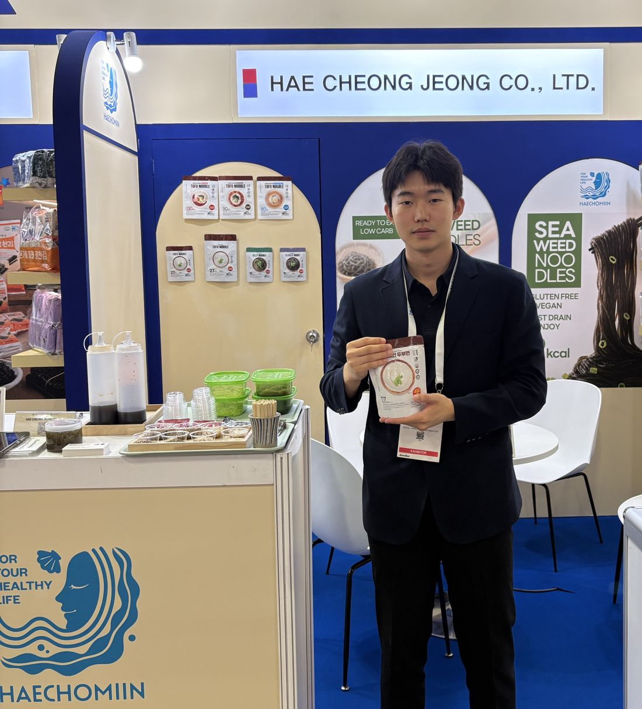

01 / 06Seafood · F&B2026.09.02 — 04

Seafood Expo Asia 2026
Sands Expo & Convention Centre · Singapore
전시 통역 요원 (중국어) · 해청정 부스, 한국관
전시대행사 하이퍼스를 통해 한국관 참가사 해청정(해초미인) 부스의 중국어 통역을 전담했습니다. 해초·두부·다시마·검은콩 면 등 즉석 저칼로리 건강면 제품군의 특징(글루텐프리·비건 인증, 4無 무첨가, 상온 보관)을 사전에 숙지한 뒤, 3일간 부스를 찾은 중국어권 바이어를 대상으로 제품 소개와 상담을 통역하고 수출상담 일지를 작성했습니다.